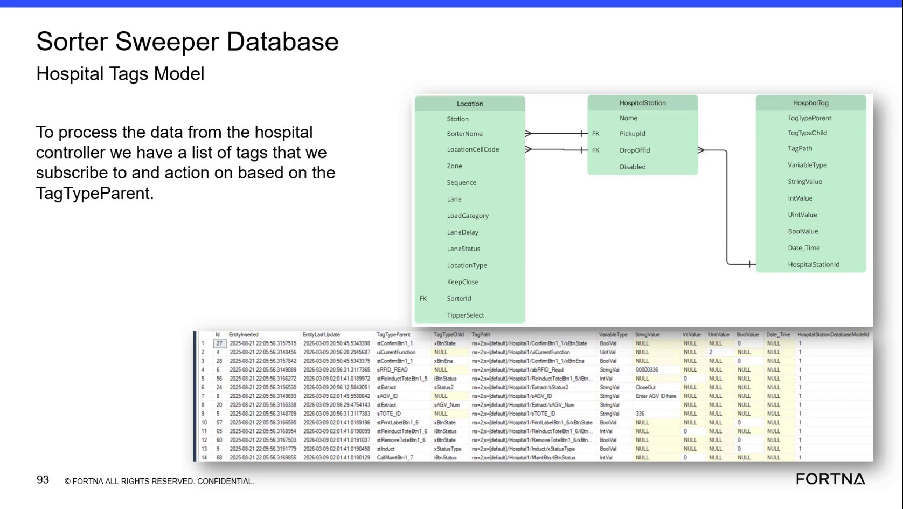

| Procedure ID | proc_check_hospital_tag_variable_types_and_stored_values_v1 |
|---|---|
| Title | Check Hospital Tag Variable Types and Stored Values in the WCS Database |
| Procedure Type | diagnostic |
| Primary Role | L2_support |
| Support Safe | Yes |
| Capability Tags | wcs_system_faults |
| Access Surface | wcs_sql |
| Audience Roles | L2_support, L3_support |
| Failure Pattern Tags | system_fault |
| Validation Status | needs_sme_review |
| Merge Status | source_finalized |
Use the WCS / Helix DB (SSMS) read-only view of the Sorter Sweeper Database to inspect HospitalTag records. Verify TagTypeParent, TagTypeChild, TagPath, VariableType, the applicable typed value field, and Disabled state for a hospital or PLC tag.
Use this WCS / Helix DB (SSMS) diagnostic when validating how a hospital-controller or PLC tag is represented in the Sorter Sweeper HospitalTag model, especially when the observed tag value, type, or communication path is in question.

Responsible role: L2_support
Instruction:
In the WCS / Helix DB (SSMS) read-only view, open the Sorter Sweeper Database and locate the HospitalTag / Hospital Tags Model records. Inspect the fields TagTypeParent, TagTypeChild, TagPath, VariableType, StringValue, IntValue, UintValue, BoolValue, Date_Time, and Disabled.
Expected result:
A HospitalTag record or set of records is visible with the named tag-definition and typed-value fields.
Stop or Escalate If:
Responsible role: L2_support
Instruction:
In the WCS / Helix DB (SSMS) HospitalTag record, inspect TagTypeParent and TagTypeChild. Confirm that TagPath identifies the associated hospital controller or PLC tag. TagTypeParent indicates whether the tag is an input or output.
Expected result:
The record shows identifiable TagTypeParent and TagTypeChild values and a TagPath associated with the expected hospital controller or PLC tag.
Stop or Escalate If:
Responsible role: L2_support
Instruction:
Inspect VariableType in the WCS / Helix DB (SSMS) HospitalTag record. Use the indicated type to determine whether the applicable value is stored in StringValue, IntValue, UintValue, BoolValue, or Date_Time.
Expected result:
VariableType identifies the value representation and points to the corresponding typed value field.
Stop or Escalate If:
Responsible role: L2_support
Instruction:
Inspect the value field associated with VariableType in the WCS / Helix DB (SSMS) record. Compare the observed value with VariableType. Treat unrelated value fields that are NULL as unused fields for that record when the selected typed value field contains the tag value.
Expected result:
The applicable typed value field contains the observed tag value, while unrelated value fields may be NULL.
Stop or Escalate If:
Responsible role: L2_support
Instruction:
Inspect Disabled in the WCS / Helix DB (SSMS) HospitalTag record. Record the observed Disabled state together with TagPath, VariableType, and the value in the applicable typed field.
Expected result:
Disabled is observable, and the diagnostic record contains the tag path, variable type, applicable stored value, and disabled state.
Stop or Escalate If: